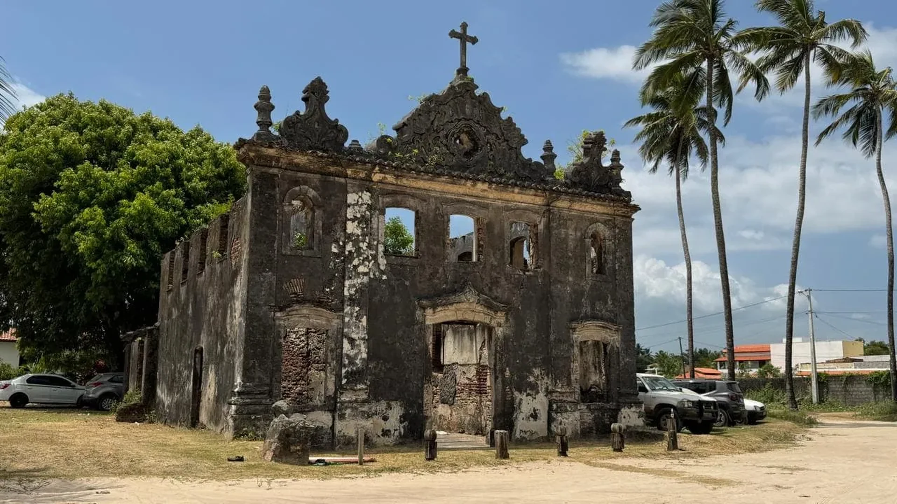
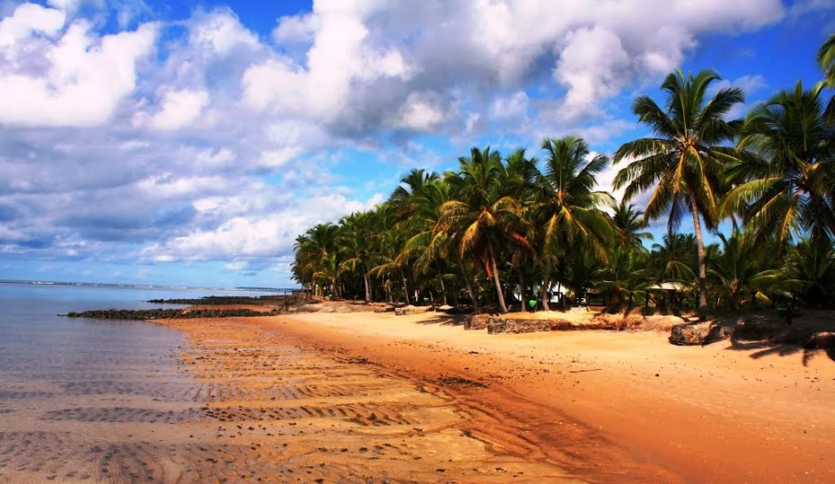
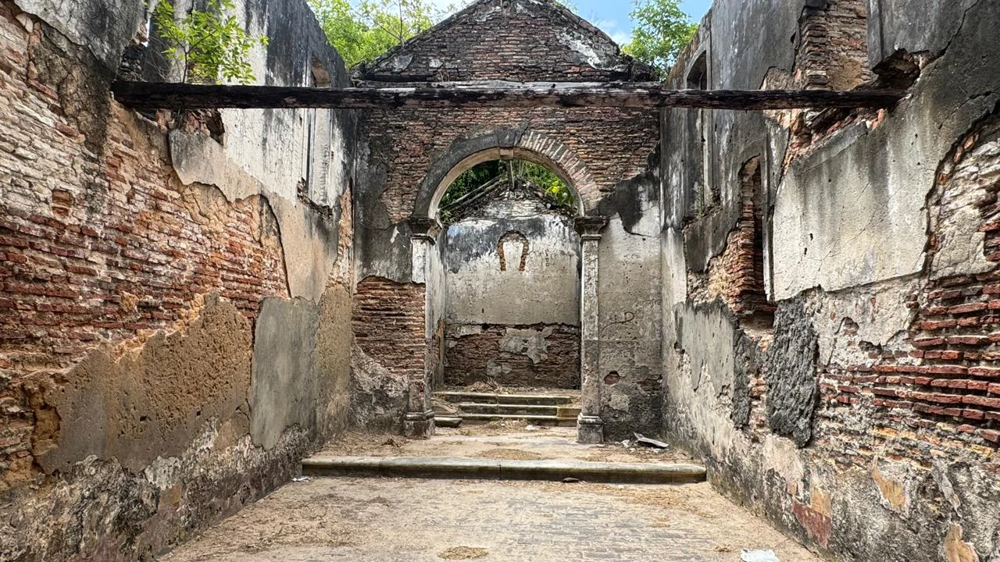
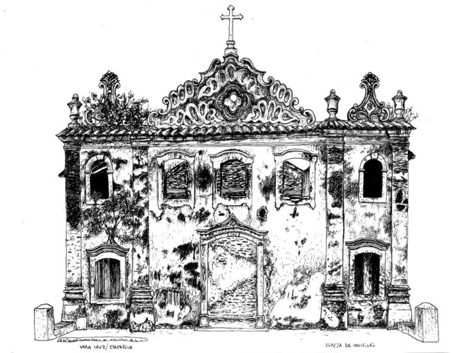
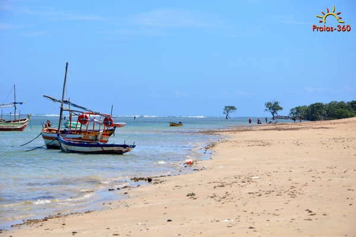
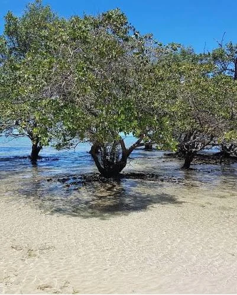
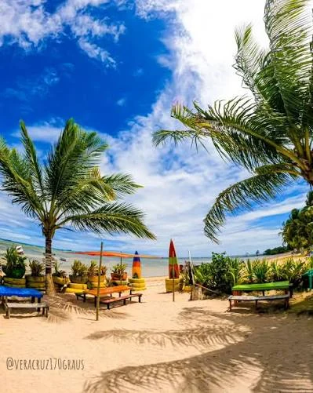

Praia, fé e patrimônio colonial
Conceição
Uma comunidade marcada pelo mar e pelas ruínas da antiga Igreja de Nossa Senhora da Conceição, patrimônio histórico que ajuda a contar a memória religiosa e cultural de Vera Cruz.
Conceição em poucas palavras
Marco histórico
As ruínas da igreja são um dos principais símbolos culturais da localidade.
Fé e devoção
O nome da praia e da comunidade se relaciona com Nossa Senhora da Conceição.
Praia e natureza
Coqueiros, mangue e mar calmo completam a paisagem da região.
Onde a praia encontra a memória do tempo colonial
Conceição é lembrada principalmente pelas ruínas da Igreja de Nossa Senhora da Conceição, pela praia de águas tranquilas e pela paisagem que mistura coqueiros, mangue, areia clara e história.
A antiga igreja, erguida no período colonial, é um dos marcos mais expressivos do patrimônio histórico de Vera Cruz. Mesmo em ruínas, o edifício continua sendo um símbolo de fé, de presença jesuítica e da participação de negros, indígenas e trabalhadores locais na formação da comunidade.
Hoje, Conceição também se destaca como lugar de contemplação, passeio e encontro com a natureza. A praia, o mangue e o silêncio do antigo templo criam um ambiente que convida à memória e ao respeito pelo patrimônio.

Uma igreja colonial que deu identidade ao lugar
A história de Conceição gira em torno da antiga Igreja de Nossa Senhora da Conceição, construída à beira-mar e ligada à presença católica no período colonial.
O material enviado ao projeto informa que a igreja foi construída por jesuítas, negros e indígenas, sendo hoje reconhecida como um importante patrimônio cultural da região. A inscrição "1776", ainda visível na fachada, reforça a referência ao século XVIII.
Em alguns trechos do texto recebido aparece o ano "1976", mas isso contrasta com a inscrição da própria fachada e com a caracterização colonial do templo. Por isso, esta página adota 1776 como marco de referência local, apresentando a construção como obra do período colonial tardio.
Dedicada a Nossa Senhora da Conceição, a igreja se tornou centro de devoção e referência para moradores da área, formada historicamente por pescadores, agricultores e pequenos comerciantes. Ao redor dela, a praia foi sendo reconhecida pelo mesmo nome, reforçando a ligação entre fé, território e comunidade.
Erguimento do templo
Construção atribuída a jesuítas, negros e indígenas, em linguagem arquitetônica colonial.
Data visível na fachada
A inscrição preservada no frontispício é uma das principais referências cronológicas do edifício.
Devoção e uso comunitário
A igreja serviu como espaço de oração, referência visual e símbolo religioso da localidade.
Deterioração progressiva
Falta de manutenção e ação do tempo provocaram a perda do telhado e o desgaste da estrutura.
Ruínas como patrimônio
O antigo templo segue como marco histórico, cultural e turístico de Vera Cruz.
Por que esse nome?
O topônimo nasce da devoção mariana
A interpretação mais aceita é que o nome Conceição esteja ligado diretamente à dedicação da antiga igreja a Nossa Senhora da Conceição.
Em muitas comunidades coloniais, o nome do templo, do orago ou da santa padroeira acabou dando nome ao lugar. Em Conceição, essa associação parece natural: a igreja era o principal marco da área e ajudou a identificar a praia, a paisagem e a comunidade diante dos moradores da ilha.
Assim, a origem do nome é entendida como expressão de fé e pertencimento: a praia da Conceição é, antes de tudo, o lugar da antiga Igreja de Nossa Senhora da Conceição.
Igreja de Nossa Senhora da Conceição
Um edifício de valor histórico, arquitetônico e afetivo, hoje preservado na memória pelas suas ruínas.
Um templo que ainda fala por suas paredes
A igreja apresenta traços da arquitetura colonial e conserva, mesmo em ruínas, a imponência do frontispício, dos vãos, das molduras e do desenho decorativo da fachada.
O interior revela a antiga nave, o espaço do altar e os remanescentes de um conjunto que já não possui telhado, mas ainda mantém forte valor histórico e artístico.
A construção, atribuída a jesuítas, negros e indígenas, expressa a formação plural da sociedade colonial e a força de um patrimônio que resistiu ao tempo, ao vento e à proximidade do mar.
Patrimônio colonial
A igreja é reconhecida como um marco da presença religiosa e cultural do período colonial na Ilha de Itaparica.
Construção coletiva
O relato do projeto destaca a participação de jesuítas, negros e indígenas na obra do templo.
Referência da paisagem
Mesmo em ruínas, a antiga igreja continua sendo o elemento mais emblemático da comunidade.


Patrimônio e preservação
Ruínas que pedem cuidado, respeito e memória
O estado atual da igreja evidencia a urgência de preservar o patrimônio histórico de Vera Cruz.
Parte do telhado desmoronou, há desgaste nas paredes, áreas fragilizadas e marcas de abandono. Ainda assim, a estrutura mantém forte presença visual e continua sendo ponto de interesse turístico e cultural.
Preservar as ruínas da Igreja de Nossa Senhora da Conceição significa proteger não apenas uma construção antiga, mas um elo entre o passado colonial e a identidade contemporânea da comunidade.
A ruína não representa o fim da história: ela permanece como documento de pedra, cal e memória, lembrando o valor da fé, do trabalho e da herança cultural local.
Praia, mangue e águas tranquilas
Conceição não se resume às ruínas: sua paisagem natural também é parte essencial da experiência do lugar.
A praia reúne faixas de areia, coqueiros, mar calmo e trechos de mangue, compondo um cenário de rara beleza. Pequenas embarcações, águas rasas e sombra natural reforçam o caráter acolhedor da região.
Essa convivência entre patrimônio histórico e ambiente costeiro faz da localidade um espaço especial para turismo cultural, contemplação e educação patrimonial.



Lendas, causos e memórias de Conceição
Esta seção reúne narrativas do imaginário popular e leituras afetivas do lugar. Elas fazem parte da memória cultural, mas não devem ser entendidas como fatos históricos comprovados.
A santa que protegia o mar
Na tradição devocional, a presença de Nossa Senhora da Conceição era associada à proteção de famílias, pescadores e viajantes que dependiam das águas da ilha.
Leitura baseada na devoção mariana e na cultura litorânea local.O silêncio das ruínas
Moradores costumam dizer que, quando o vento passa pelas paredes vazadas da antiga igreja, parece carregar ecos de antigas orações e cantos religiosos.
Narrativa do imaginário popular sobre o antigo templo.Memória gravada na paisagem
Para muitos visitantes, Conceição é o tipo de lugar em que a praia e a ruína parecem guardar, ao mesmo tempo, descanso, mistério e saudade de um passado distante.
Leitura afetiva que aproxima natureza, patrimônio e memória.Fatos importantes sobre a localidade
A fachada preserva a inscrição com o ano 1776, referência fundamental para a datação local do templo.
Mesmo em ruínas, a igreja mantém elementos do repertório construtivo do período colonial.
As ruínas e a praia atraem visitantes interessados em história, fotografia, natureza e contemplação.
O nome Conceição está ligado à devoção a Nossa Senhora da Conceição e ao antigo templo.
A implantação costeira faz da igreja um marco visual singular na paisagem da ilha.
A falta de conservação compromete a estrutura e reforça a necessidade de ações de preservação.
O relato do projeto destaca a participação de jesuítas, negros e indígenas na edificação.
Praia, coqueiros, embarcações e mangue completam o valor paisagístico da comunidade.
Galeria da comunidade
Clique nas imagens para ampliar.
Memória coletiva
Vozes de Conceição
Você conhece uma história sobre a igreja, a praia, antigas festas, moradores ou curiosidades da comunidade? Compartilhe sua lembrança no mural.
Mural da comunidade
0 publicações
Memórias compartilhadas
Conectando ao mural...
Pesquisa e responsabilidade
Fontes da página
O conteúdo desta página foi organizado a partir dos textos enviados para o projeto, das imagens compartilhadas pelo usuário e da leitura histórica da própria inscrição preservada na fachada da igreja.
- Texto do projeto sobre a Igreja de Nossa Senhora da Conceição e seu estado atual de conservação.
- Registros fotográficos das ruínas, do interior da igreja e da paisagem da Praia de Conceição.
- Memória local sobre devoção, formação da comunidade e valor cultural do monumento.
Observação importante: havia no texto enviado a menção a "1976", mas a inscrição na fachada indica 1776. Nesta página, a referência cronológica adotada foi 1776, compatível com a caracterização colonial do edifício.